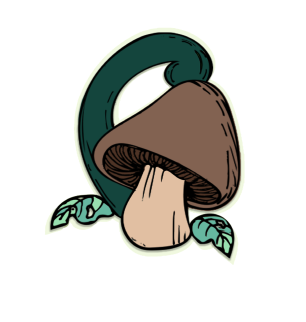
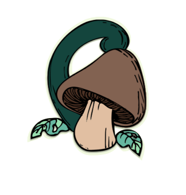
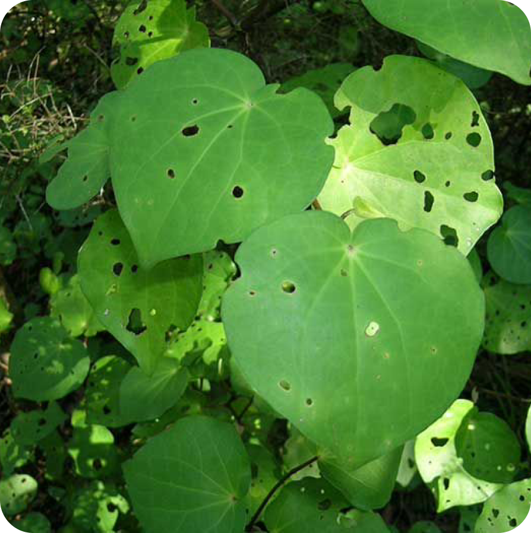
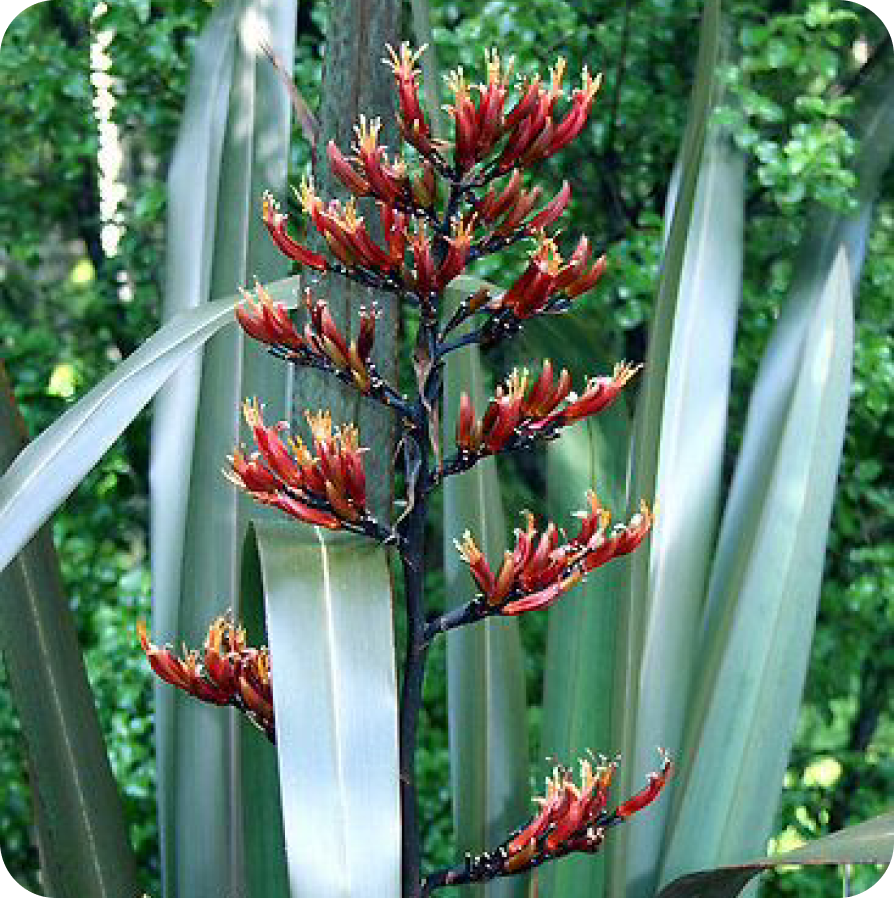
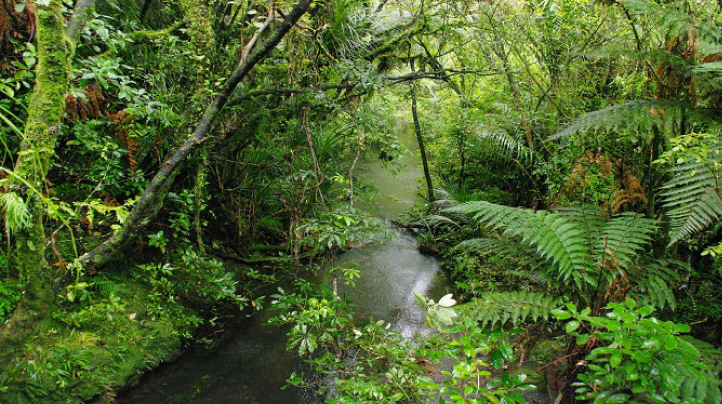
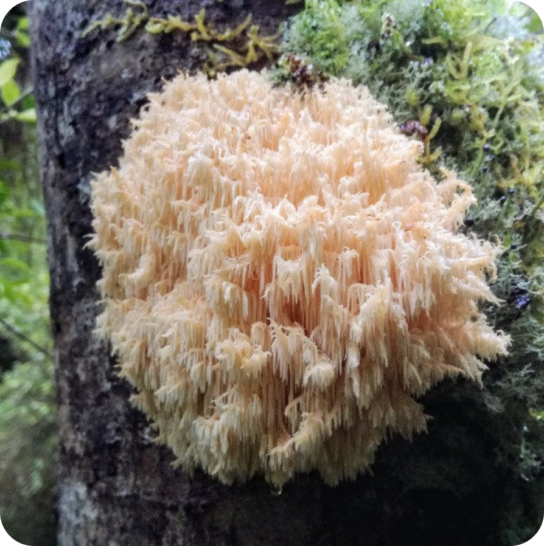
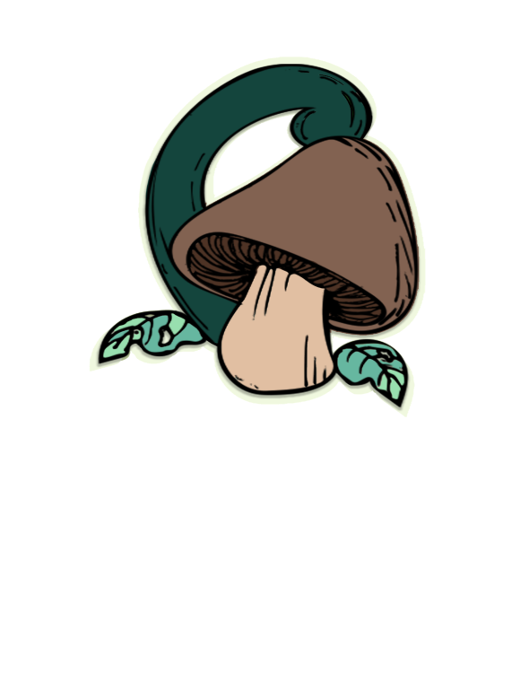
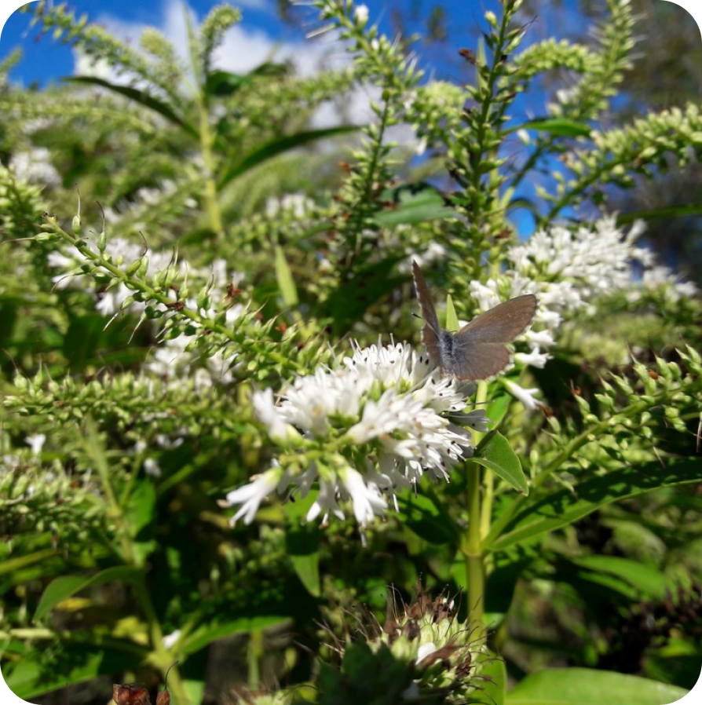

Log In
Sign Up
The jury REACTS, aghast. MONTGOMERY Ow! I’m hit! Oh, lordy, I am hit! The judge BANGS her gavel. JUDGE
Order! Order! Please, Mr. Montgomery. MONTGOMERY The venom! The venom is coursing through my veins! I have
been felled by a wing-ed beast of destruction. You see? You can’t treat them like equals. They’re strip-ed
savages! Stinging’s the only thing they know! It’s their way! ANGLE ON: Adam, collapsed on the floor.
Barry rushes to his side.
Kia ora and Welcome to Hamuhamu!
Our intentions are to give you the needed resources to learn about all the yummy foods and medicinal plants that grow all around us here in the beautiful land of Aotearoa.
Our intentions are to give you the needed resources to learn about all the yummy foods and medicinal plants that grow all around us here in the beautiful land of Aotearoa.
First learn about this weeks mind blowing plants that can change your life. Get started by clicking on the links to the left or scroll down, better yet create that account and you will have access to all our learning materials!
Contact Us

Koromiko
Lions Mane
Harakeke (flax)
KAWAKAWA (MACROPIPER EXCELSUM)
This tree is a native plant found in coastal areas of Aoteroa. Māori ate the lush, seedy berries and used it for many medicinal propertys, they also burned green leaves and branches in their kumara patches to destroy insects with the bitter smoke. It many other uses included:


This tree is a native plant found in coastal areas of Aoteroa. Māori ate the lush, seedy berries and used it for many medicinal propertys, they also burned green leaves and branches in their kumara patches to destroy insects with the bitter smoke. It many other uses included:
Hamuhamu aim is to provide a platform that makes learning about New Zealand’s native plants easy. When you
create an account with us, you will have access to all the valuable knowledge we have to offer on edible
and medicinal plants. We hope to make finding affordable and healthy produce that much easier, or simply
for all those out there that have a genuine interest.
We will set you up with a your own online profile, customized with a library to fill with all the amazing plants you wish to save, recipes for these foods and maps to their known locations for will be available on this site. Not only do you have our resources to teach you whats out there, you can also upload, presonalise or save your own found plants and become familiar with identifying and recognising them.

We will set you up with a your own online profile, customized with a library to fill with all the amazing plants you wish to save, recipes for these foods and maps to their known locations for will be available on this site. Not only do you have our resources to teach you whats out there, you can also upload, presonalise or save your own found plants and become familiar with identifying and recognising them.
Hamuhamu
An announcement comes over the PA. ANNOUNCER (V.O) Students, faculty, distinguished bees...please welcome,
Dean Buzzwell. ANGLE ON: DEAN BUZZWELL steps up to the podium. The podium has a sign that reads: “Welcome
Graduating Class of:”, with train-station style flipping numbers after it. BUZZWELL Welcome New Hive City
graduating class of... The numbers on the podium change to 9:15. BUZZWELL (CONT’D)
Closes the door behind him. He’s not happy. Barry is washing his hands. He glances back at Ken. KEN You
know, I’ve just about had it with your little mind games. BARRY What’s that? According to all known laws
of aviation,
LIONS MANE
(HERICIUM ERINACEUS RUSSULALES)
(HERICIUM ERINACEUS RUSSULALES)
SPLITZ This is the coolest. What is it? They stop at a BALL on a white line and look up at it. JACKSON I
don’t know, but I’m loving this color. SPLITZ (smelling tennis ball) Smells good. Not like a flower. But I
like it. JACKSON Yeah, fuzzy. BUZZ Chemical-y. JACKSON Careful, guys.
I hope that was alright. Ken hits his head on the table. BARRY I’m going to go drain the old stinger. KEN
Yeah, you do that. Barry EXITS to the bathroom, grabbing a small piece of a VARIETY MAGAZINE on the way.
BARRY Oh, look at that. Ken slams the champagne down on the table. Ken closes his eyes and buries his face
in his hands. He grabs a magazine on the way into the bathroom. SEQ. 2800 - “BARRY FIGHTS KEN” INT.
BATHROOM - CONTINUOUS Ken ENTERS,
HARAKEKE
(FLAX)
(FLAX)

are walking up the stairs to the roof. BARRY I don’t understand why they’re not happy. We have so much now.
I thought their lives would be better. "Bee Movie" - JS REVISIONS 8/13/07 101. VANESSA Hmmm. BARRY
They’re doing nothing. It’s amazing, honey really


in there? CUT TO: INT. COCKPIT Lou, Buzz, Splitz, and Jackson come up alongside the cockpit. BARRY The
pollen jocks! VANESSA They do get behind a fellow. BARRY Black and yellow. LOU LODUCA (over headset) Hello.
"Bee Movie" - JS REVISIONS 8/13/07 121. Alright you two, what do you say we drop this tin can on the
blacktop? VANESSA What blacktop? Where? I can’t see anything. Can you? BARRY No, nothing. It’s all cloudy.
CUT TO: EXT. RUNWAY Adam SHOUTS. ADAM Come on, you’ve got to think bee, Barry. Thinking bee, thinking bee.
ANGLE ON: Overhead shot of runway. The bees are in the formation of a flower. In unison they move, causing
the flower to flash.